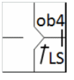

action { batter -> 1BLS ob4 }

Si un jeu est effectué contre le joueur victime de l’obstruction … le jeu est arrêté et tous les coureurs peuvent avancer sans risque d’être retirés et jusqu’aux bases qu’ils auraient atteintes, selon l’arbitre, s’il n’y avait pas eu obstruction. Le coureur gêné par l’obstruction se voit accorder au moins une base en plus de celle qu’il avait régulièrement touchée avant l’obstruction. Tous les coureurs précédents, forcés d’avancer par la gratification des bases comme pénalité pour l’obstruction, avancent sans risque d’être retirés. [OBR 6.01(h)(1)].
Pour le coureur gêné, on écrit « ob » (en minuscules) suivi du numéro du joueur de champ ayant commis l'erreur. Il s'agit d'une erreur entraînant une avance supplémentaire. Pour tout autre coureur qui avance, le numéro de frappe du coureur gêné est indiqué entre parenthèses.
Exemple 43:
| WBSC | Transcription dans l'outil de scorage | Outil |
|---|---|---|
|
 |
/* Le batteur frappe un hit dans le champ gauche, et gagne une base supplémentaire sur
obstruction en première base */ action { batter -> 1BLS ob4 } |
|